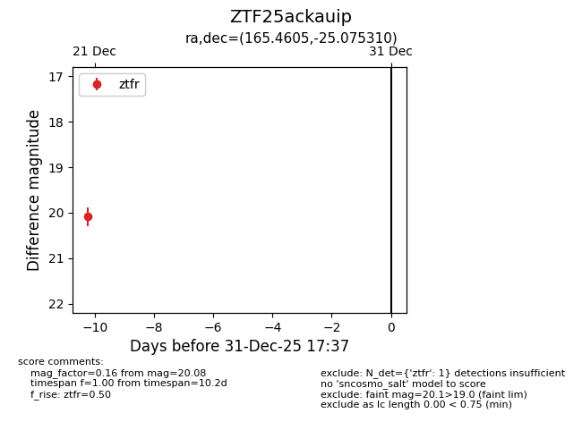
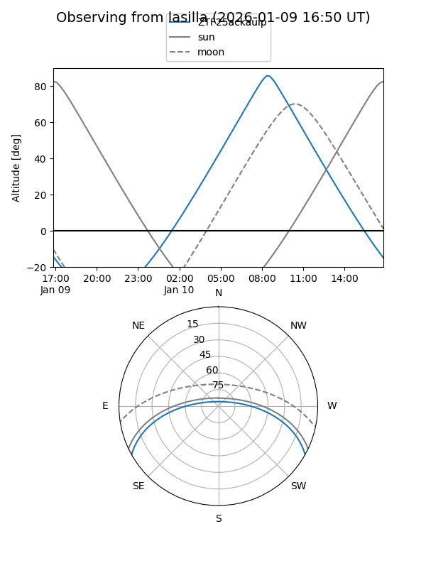
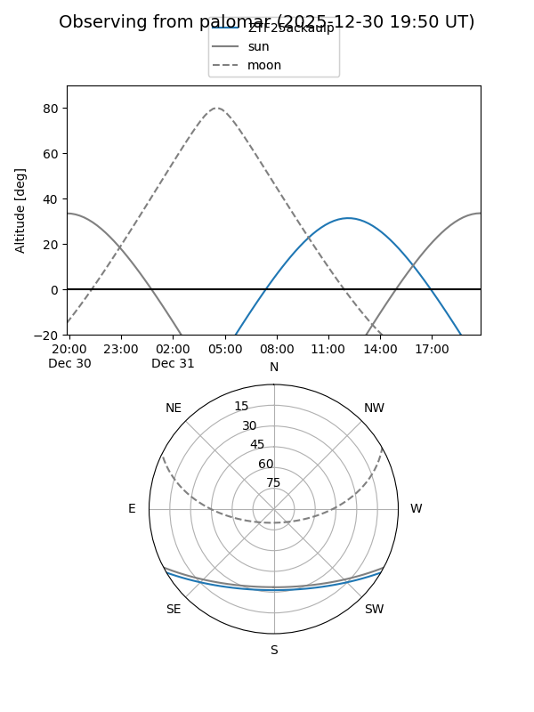

ZTF25ackauip
Target ZTF25ackauip at 2025-12-31 17:00
Aliases and brokers:
FINK:
Lasair:
ALeRCE:
alt names
ZTF25ackauip (ztf,fink_ztf)
Coordinates:
equatorial (ra, dec) = 165.4605,-25.07531
equatorial (HMS+DMS) = 11:01:50.52,-25:04:31.12
galactic (l, b) = (273.6685,+31.49551)
Flags:
Photometry:
last ztfr=20.08
1 ztfr detections
Lightcurve

Visibility


Additional plots